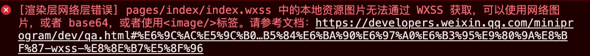
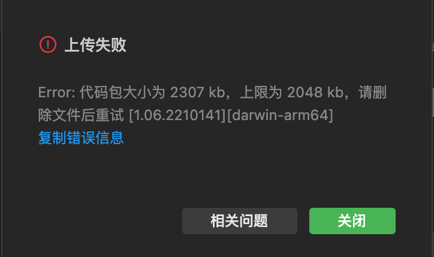

开发准备
开发微信小程序之前，需要一些准备工作，主要包括了解小程序的特点、申请小程序账号、安装小程序开发者工具。
1.1 小程序的概念
小程序是一种新型的轻量的开发技术，"微信之父" 张晓龙是这样定义小程序的：

结论：小程序是基于WEB规范，采用HTML、CSS和JS（WXML/WXSS/JavaScript）等搭建的一套框架，本质就是富单页面web应用。

扩展阅读：微信开发者文档
1.2 小程序的特点
本节目标: 了解小程序与web网页开发区别
小程序的主要开发语言是 JavaScript ，小程序的开发同普通的网页开发相比有很大的相似性。对于前端开发者而言，从网页开发迁移到小程序的开发成本并不高，但是二者还是有些许区别的。
网页：渲染线程和脚本线程是互斥的
小程序：渲染线程和脚本线程是两个独立的线程
说明：
- 网页依赖浏览器
- 小程序依赖微信=>ios/android微信客户端
总结：
- 相同点：web开发和小程序开发都遵循web标准，使用js开发、
- 不同点：web应用渲染线程和js脚本执行线程是互斥（同时只能干一件事儿）；小程序应用渲染线程和js脚本执行线程是独立的（可以同时干活）
- 不同点：web应用运行在浏览器；小程序应用运行在微信客户端
1.3 注册小程序账号
开发小程序的第一步，你需要拥有一个小程序帐号，通过这个帐号你就可以管理和开发属于自己的小程序。
注册地址：https://mp.weixin.qq.com/cgi-bin/registermidpage?action=index&lang=zh_CN
账号类型
选择小程序

账号信息
注意⚠️：填写邮箱要确保之前没有注册过微信公众平台其它账号的新邮箱（例如：公众号）

邮箱激活

信息登记和绑定管理员
注意：填写完个人信息，使用自己的微信扫码绑定小程序管理员

登录小程序后台

说明：需要管理员授权（上一步注册中扫码绑定），使用管理员微信扫码确认后即可登录到小程序后台

1.4 小程序管理后台
本节目标: 了解管理后台常用菜单和开发设置信息
小程序信息
账号注册完毕后不能立刻使用，还需要进一步对小程序的信息进行完善，具体的操作步骤如下图所示参考老师课堂演示。

注意⚠️：在填写小程序类目时不要选择游戏类型，否则视为小游戏开发了。
获取AppID
说明：在开发和发布小程序时必须要填写 AppID

项目成员管理

总结：
小程序管理后台的作用？
- 基本信息=》维护小程序基本信息
- 版本管理=》管理开发好的小程序，进行审核和发布上线
- 成员管理=》添加其他同学，分配开发者权限，共同开发一个小程序
- 开发管理=》获取appid，创建和发布项目需要使用
- 统计=》运营人员使用
扩展：
到企业工作开发小程序流程：
- 获取公司小程序的APPID
- 让管理员给你开通开发者权限
1.5 微信开发者工具
微信开发者工具是官方提供的专门用于微信小程序开发调试的工具，它提供的主要功能如下：
- 快速创建小程序项目（起到脚手架的作用）
- 代码的查看和编辑（相当于 vs code 作用）
- 对小程序功能进行调试（相当于浏览器作用）
- 小程序的预览和发布
下载并安装微信开发者工具，双击下载好的微信开发者工具，然后后根据引导下一步、下一步操作直到完成，首次打开微信开发者工具时需要先进行登录（打开手机微信扫码登录）。

基础知识
小程序开发的方式与 Web 非常类似，使用 Javascript 做为开发语言，使用 CSS 来实现页面的布局，除此之外还内置了许多功能丰富的组件，如地图、富文本、轮播图等。
2.1 创建小程序
通过小程序开发者工具创建一个新的项目，步骤：
- 填写小程序项目名称
- 选择项目代码保存目录（
注意：选择后加上项目名称，这样代码会生成到该目录） - 填写AppID，语言选择javascript
- 后端服务不使用云服务，最后确定

注意⚠️：选择小程序项目目录时，需要手动加上项目名称

2.2 目录结构
小程序包含一个描述整体程序的 app 和多个描述各自页面的 pages
├── pages .......................... 页面目录（默认生成2个页面index和logs）
│ ├── index ...................... index页目录
│ ├── index.js ............... index页面业务逻辑
│ ├── index.wxml ............. index页面布局结构
│ └── index.wxss ............. index页面布局样式
│ └── logs ....................... logs页目录
│ ├── logs.js ................ logs页面业务逻辑
│ ├── logs.json .............. logs页面配置文件
│ ├── logs.wxml .............. logs页面布局结构
│ └── logs.wxss .............. logs页面布局样式
└── utils .......................... 全局方法
└── util.js ....................工具方法
├── app.js ......................... 入口文件(程序入口)
├── app.json ....................... 全局配置
├── app.wxss ....................... 全局样式
├── project.config.json ............ 项目配置文件
├── project.private.config.json .....项目私有配置文件
├── sitemap.json ................... 配置小程序及其页面是否允许被微信索引
- 页面的4 种文件类型：
| 类型名称 | 作用 | 是否必须存在 |
|---|---|---|
| .wxml | 用于页面的布局结构，相当于网页中 .html 文件 | 是 |
| .wxss | 用于页面的样式，相当于网页中的 .css 文件 | 否 |
| .js | 用于页面的逻辑 | 是 |
| .json | 用于页面的配置 | 否 |
我们知道的是小程序的每个页面都是由以这4种文件类型的文件共同构成的且四个文件必须是相同的名字。
- 再来看一些特定名称的文件：
| 文件名 | 作用 | 是否必须存在 |
| app.js | 小程序入口（首先执行的文件） | 是 |
| app.json | 小程序的 全局配置 | 是 |
| app.wxss | 小程序的 全局样式 | 否 |
| project.config.json | 小程序开发者工具配置 | 是（会自动创建） |
| sitemap.json | 小程序搜索优化 | 否 |
以上关于文件类型及特定文件相关的细节，后续学习过程中会逐步讲解，在此只是先对目结构有个大致的了解！
2.3 牛刀小试
需求：将小程序页面中的文字颜色变成红色，字号变成 20px。
通过上面的讲解我们知道 .wxml 是用来定义页面内容及结构的，所以我们先从 .wxml 入手，打开 pages/index/index.wxml 找到如下代码：
<!-- 第 20 ~ 22 行 -->
<view class="usermotto">
<text class="user-motto">{{motto}}</text>
</view>
在此基础上改变一些内容（加了几个感叹号），保存代码后，页面中立刻发生了变化（刷新）
<!-- 第 20 ~ 22 行 -->
<view class="usermotto">
<text class="user-motto">{{motto}}!!!</text>
</view>
tip 提示: 通过这一步操作体会一下 .wxml 类型的文件相当于 html 用来定义页面中的内容和结构。
接下来打开 pages/index/index.wxss，找到 .usermotto 这个选择器，如下代码所示：
/* 第 17 ~ 19 行 */
.usermotto {
margin-top: 200px;
}
在此基础上修改一些样式，设置字号及颜色，保存代码后，页面也会立刻发生变化（刷新）
.usermotto {
font-size: 20px;
color: red;
margin-top: 200px;
}
tip 提示: 通过这一步操作体会一下 .wxss 类型的文件相当于 css 用来定义页面样式，并且似乎（事实也是这样的）和 css 的属性也都是一样的！
至此 .js 和 .json 等其它内容我们后面会有专门的章节进行讲解。
2.4 页面导航布局
通过一个小案例来学习小程序页面布局的相关知识，主要涉及到小程序内置的组件（标签）用样式的使用。
下图是比较常见的页面导航布局，要实现这个布局会用到小程序中提供的一些组件（标签）如下表所示：
| 组件名（标签） | 作用 | 与 html 对比 |
|---|---|---|
| view | 定义一个块级元素 | 相当于 html 中的 div 标签 |
| text | 定义一个行内元素 | 相当于 html 中的 span 标签 |
关于小程序页面布局中的样式几乎和网页的 css 是一样的，先学习部分选择器的使用，如下表所示：
| 选择器 | 示例 | 含义 |
|---|---|---|
| 类选择器 | .navs | 根据类名选择元素 |
| 标签选择器 | text、view | 根据标签名选择元素 |
| 后代选择器 | .navs text | 根据标签的嵌套关系选择元素 |
将原来在 pages/index/index.wxml 和 pages/index/index.wxss 中编写代码删除，然后加关于页面导航布局相关的代码。
完整代码如下所示：
<!-- pages/index/index.wxml -->
<view class="navs">
<text class="active">精选</text>
<text>手机</text>
<text>食品</text>
<text>内衣</text>
<text>生鲜</text>
<text>母婴</text>
</view>
/* pages/index/index.wxss */
.navs {
display: flex;
justify-content: space-around;
height: 44px;
padding: 0 10px;
line-height: 44px;
border-top: 1px solid #eee;
}
.navs text {
color: #333;
font-size: 14px;
}
.navs .active {
color: #f5a11c;
border-bottom: 4px solid #f5a11c;
}
tip 提示: 通过上述的小例子大家要体会在编写小程序页面时与网页布局几乎是一致的，所不同的就是小程序中使用了一些特定的组件（组件），关于样式部分和 css 几乎完全一致。
另外大家有没有发现样式文件不需要引入到页面当中，它是自动引入并生效的，但是要求页面文件的名称和样式的文件必须要一致！
2.5 小程序适配
小程序主要是运行在手机端的，它也需要像移动 Web 一样来处理不同大小屏幕的适配，小程序中适配的方法非常简单，它提供了专门的长度单位 rpx 它会自动的根据屏幕的大小转换成px。
/* 用 px 定义图片的尺寸 */
.preview-image {
width: 375px;
height: 160px;
}
/* 用 rpx 定义图片的尺寸 */
.preview-image {
width: 750rpx;
height: 320rpx;
}
说明：在小程序模拟器中对比使用 px 和 rpx 的区别后发现，rpx 在不同的设备中折算成 px 的实际大小是变化的，即针对不同尺寸屏幕进行适配的处理。
还有一点非常重要也必须要知道，小程序的屏幕宽度为 750rpx，即一个盒子的宽度如果设置为 750rpx 时会占满整个小程序的屏幕宽度。
总结：
- 规定所有屏幕都是750rpx宽：实际开发设计稿是 750px，设计稿中是多少 px 在小程序中就写成多少 rpx，即 1 : 1 的关系
- 小程序会根据屏幕大小自动转换rpx为px
2.6 轮播图交互
为了让大家对小程序内置组件有更多的了解，我们再来看几个功能强大的组件：
| 组件名（标签） | 作用 | 与 html 对比 |
|---|---|---|
| swiper | 滑块视图容器 | 无 |
| swiper-item | 可滑动的区块（用在 swiper 内部） | 无 |
| image | 加载图片 | img（注意名称区别） |
通过 swiper 组件的属性对轮播图的功能进行配置，常见的属性包括：
| 属性名 | 默认值 | 作用 |
|---|---|---|
| indicator-dots | false | 是否显示面板指示点 |
| autoplay | false | 是否自动切换 |
| circular | false | 是否采用衔接滑动 |
| indicator-color | rgba(0, 0, 0, .3) | 指示点颜色 |
| indicator-active-color | #000000 | 当前选中的指示点颜色 |
| ... 还有更多 |
swiper 的功能强大提供的属性也非常多，不过不用头疼，常用的就几个以后根据开发需求随用随查就可以了。
示例：
<swiper autoplay indicator-dots>
<swiper-item>
<image class="img" src="https://t7.baidu.com/it/u=508006830,4042443322&fm=193&f=GIF"></image>
</swiper-item>
<swiper-item>
<image class="img" src="https://t7.baidu.com/it/u=508006830,4042443322&fm=193&f=GIF"></image>
</swiper-item>
</swiper>
2.7 购物车计数器
对小程序布局的知识有了一定了解后，我们来学习如何在小程序中处理逻辑，比如数据渲染和事件处理等。
我们以实现购物车计数器功能为例展开学习。
打开pages/index/index.js将原来的全部内容都删除掉，我们一点点添加代码。
在动手前最先要了解的是每个页面的 .js 文件中必须调用一个内置全局的函数 Page,并且至少要传入一个空对象做为它的参数，否则可能会报错，如下图所示：

响应变量
如何定义响应变量？
Page 函数的配置项及其含义：
| 选项 | 含义 | 说明 |
|---|---|---|
| data | 定义页面初始数据 | 类似 vue 组件的 data 函数 |
语法：data:{ 变量名: 变量值 }
在了解了上述的知识后，我们看看相关的代码：
// pages/index/index.js
Page({
data: {
msg: '大家好，这是我开发的第一个小程序！',
},
})
上述代码中为 pages/index/index.wxml 初始了一个数据 msg，那如何才能将它渲染到页面当中呢？非常简单通过插值（即一对双大括号）来将
msg 渲染到指定的页面位置：
<!-- pages/index/index.wxml -->
<!-- 上一小节页面导航和轮播图代码省略了... -->
<!-- 添加的新代码 -->
<view>{{msg}}</view>
保存代码后就可以在页面中看到 "大家好，这是我开发的第一个小程序！" 这段文字了。
大家自行尝试一下数据类型如果是数组或对象时，如何渲染到页面当中？例如：
// pages/index/index.js
Page({
data: {
msg: '大家好，这是我开发的第一个小程序！',
// 初始对象类型的数据
user: {
name: '小明',
age: 18,
},
},
})
揭晓答案：其实也非常简单跟 Vue 的语法几乎是一样，直接通过 . 语法就可以了。
事件监听
在对
data的知识有了一个了解之后，再来学习一下小程序中事件监听的处理方式。
语法： bind:事件名称="回调函数" 或者 bind事件名称="回调函数"
小程序中大部分事件类型与网页中一致，如 blur、focus、change 等，也有个特殊的事件类型需要指出，点击事件在小程序不是使用
click 事件类型，取而代之的是 tap 事件类型。
<!-- page/index/index.wxml -->
<!-- 省略前面几小节的代码 -->
<button bind:tap="sayHi">点击一下</button>
上述代码中的 button 也是小程序中内置组件，通过 bind:tap="sayHi" 添加点击事件的监听，sayHi
是一个方法会在点击按钮时被调用。
那 sayHi 这个方法我们定义了吗？
在小程序页面的 .ts 文件中直接定义一个方法就可以了，来看具体的用法：
// pages/index/index.js
Page({
data: {
msg: '大家好，这是我开发的第一个小程序！',
},
sayHi() {
console.log('按钮被点击了...')
},
})
warning 注意: 做为对比 Vue 学习，Vue 中方法都是定义在 methods 属性当中，小程序页面中则是直接定义的，这点大家一定要注意区分。
此时在页面中点击一下按钮，sayHi 方法成功被调用了，以上就是小程序中的事件处理方法了，你学会了吗？
更新数据
据我们的经验可以知道 data 中的数据应该是可以根据逻辑的需要进行修改的，那我们就来学习一下小程序中如何修改这些数据吧！
语法：this.setDate({变量名: 变量值})
假如用户在点击的时候我们将 msg 这个数据修改为 "Hello everybody，this is my first miniprogram!"，如何实现呢？
// pages/index/index.js
Page({
data: {
msg: '大家好，这是我开发的第一个小程序！',
},
sayHi() {
console.log('按钮被点击了...')
// 错误的写法！
// this.msg = 'Hello everybody，this is my first miniprogram!'
// 正确的写法
this.setData({
msg: 'Hello everybody，this is my first miniprogram!',
})
},
})
warning 注意
这里要敲黑板了，小程序中修改数据并不是直接进行赋值，而是要通过调用 this.setData 方法才能实现，将需要修改的数据以对象属性/值的形式传给
this.setData 方法。
功能实现
好了基础知识铺垫完了，接下来我们就可以实现购物车计数器的功能了，分成3个步骤：
-
简单布局一下页面，用到两个
button组件和一个input组件 -
监听
button的点击事件，然后对数值进行加 1 或减 1 操作 -
将按钮修改后的结果显示在
input组件中
// pages/index/index.js
Page({
data: {
msg: '大家好，这是我开发的第一个小程序！',
// 初始值为 1
num: 1,
},
// 购物车数量加1
increment() {
this.setData({
num: this.data.num + 1,
})
},
// 购物车数量减1
decrement() {
// 数量最小为1
if (this.data.num <= 1) return
this.setData({
num: this.data.num - 1
})
},
})
<!-- pages/index/index.wxml -->
<!-- 上一小节页面导航和轮播图代码省略了... -->
<!-- 购物车 -->
<view class="cart">
<button type="primary" bind:tap="decrement">-</button>
<input value="{{num}}" />
<button type="primary" bind:tap="increment">+</button>
</view>
warning 注意: 为组件的属性绑定数据时也必须使用插值即双大括号 ，这一点与 Vue 的属性绑定也不一致！
2.8 小程序配置
小程序的配置如窗口的颜色、标题，自定义组件、底部 tab 栏等都是通过配置文件来实现的，即
.json类型的文件。
配置文件又分为：【全局配置】和【页面配置】
全局配置
全局配置即小程序根目录中的 app.json 它的最外层是一个对象，可以包含一些常见的配置项：
| 配置项 | 类型 | 是否必须 | 说明 |
|---|---|---|---|
| pages | string[] | 是 | 页面路径列表 |
| window | object | 否 | 全局的默认窗口表现 |
| tabBar | object | 否 | 底部 tab 栏的表现 |
| entryPagePath | string | 否 | 小程序默认启动首页 |
配置路由
pages的值是一个数组，所有页面的路径都要写在这个数组里，否则页面无法被访问到，数组的第一个单元为小程序的启动首页。
{
"pages": ["pages/index/index", "pages/logs/logs"]
}
下面我们新建一个页面来测试 pages 配置项的使用：
使用微信开发者工具快速创建页面
- 1.首页在pages目录下创建页面的文件夹

- 2.在新创建的目录下=》选择新建 Page =〉自动生成.js、.json、.wxml、.wxss四个文件，app.json会自动添加新建页面路径

那
pages的作用到底是什么呢？如果没有在pages中添加这个页面又会出现什么结果呢？下面我们来通过链接跳转的方式来给大家演示一下效果：
| 组件名 | 作用 | 与 htm 对比 |
| navigator | 地址跳转 | 相当于 html 中的 a 标签 |
- 3.在
pages/index/index页面中添加一个链接并跳转到刚刚创建的 demo 页面
<!-- pages/index/index.wxml -->
<!-- 省略前几小节代码 -->
<!-- 1. 相对路径 -->
<navigator url="../demo/demo">相对路径-跳转到 demo 页面</navigator>
<!-- 2. 绝对路径 -->
<navigator url="/pages/demo/demo">绝对路径-跳转到 demo 页面</navigator>
<!-- 注意如果 url 地址为空的，小程序会报一个找不到路径的错误（不影响其它功能） -->
上述两种情况都可以正常的跳转到 demo 页面，但是如果将 app.json 中的 demo 页面路径删除后，则不能成功跳转了（点击跳转链接后没有任何反应），因此我们必须要把页面的路径填写到
pages 的配置项中。
总结： 小程序页面的跳转既支持相对路径（以 . 或 .. 开头）也支持绝对路径（以 / 开头），绝对路径 / 指的是小程序的根目录。
配置窗口
window的值是一个对象，通过它可以全局配置小程序的状态栏、导航条、标题、窗口背景色。
| 属性 | 类型 | 默认值 | 说明 |
| navigationBarTitleText | string | 空白 | 导航栏标题文字内容 |
| navigationBarTextStyle | string | black | 导航栏标题颜色，仅支持 black / white |
| navigationBarBackgroundColor | 16 进制颜色 | #00000 | 导航栏背景颜色，如 #000000 |
| navigationStyle | string | default | 导航栏样式，仅支持 default / custom |
| ... 还有更多 |
{
"pages": [
"pages/index/index",
"pages/logs/logs",
"pages/demo/demo"
],
"window": {
"navigationBarTitleText": "小程序示例",
"navigationBarTextStyle": "white",
"navigationBarBackgroundColor": "#f5a11c"
}
}
配置菜单
tabBar定义小程序 tab 栏的表现，如下图即所谓的 tab 栏：

定义 tab 的内容有些多，大家参照着上图和下面的表格来对小程序的 tab 栏进行配置：
| 属性 | 类型 | 默认值 | 是否必须 | 说明 |
|---|---|---|---|---|
| list | array | 无 | 是 | tab 的列表，详见 list 属性说明，最少 2 个、最多 5 个 tab |
| color | 16 进制颜色 | 无 | 否 | tab 上的文字默认颜色，仅支持十六进制颜色 |
| selectedColor | 16 进制颜色 | 无 | 否 | tab 上的文字选中时的颜色，仅支持十六进制颜色 |
| backgroundColor | 16 进制颜色 | 无 | 否 | tab 的背景色，仅只持 16 进制颜色 |
| borderStyle | string | black | 否 | tabbar 上边框的颜色， 仅支持 black / white |
| position | string | bottom | 否 | tabBar 的位置，仅支持 bottom / top |
上述配置中 list 具体又包含以下内容：
| 属性 | 类型 | 默认值 | 是否必须 | 说明 |
|---|---|---|---|---|
| pagePath | string | 是 | 页面路径，必须在 pages 中先定义 | |
| text | string | 是 | tab 上按钮文字 | |
| iconPath | string | 否 | 图片路径，icon 大小限制为 40kb，建议尺寸为 81px * 81px，不支持网络图片，当 position为top 时，不显示 icon | |
| selectedIconPath | string | 否 | 选中时的图片路径，icon 大小限制为 40kb，建议尺寸为 81px * 81px，不支持网络图片，当position为 top 时，不显示 icon |
以上的配置不用刻意的去背，根据需要随时查看文档就可以，以下为完整示例代码：
{
"pages": [
"pages/index/index",
"pages/logs/logs",
"pages/demo/demo"
],
"window": {
"navigationBarTitleText": "小程序示例",
"navigationBarTextStyle": "white",
"navigationBarBackgroundColor": "#f5a11c",
"enablePullDownRefresh": true
},
"tabBar": {
"color": "#333",
"selectedColor": "#FFC64B",
"backgroundColor": "#FFF",
"borderStyle": "black",
"position": "bottom",
"list": [
{
"text": "首页",
"pagePath": "pages/index/index",
"iconPath": "assets/home.png",
"selectedIconPath": "assets/home-active.png"
},
{
"text": "卡券",
"pagePath": "pages/logs/logs",
"iconPath": "assets/card.png",
"selectedIconPath": "assets/card-active.png"
},
{
"text": "我的",
"pagePath": "pages/demo/demo",
"iconPath": "assets/my.png",
"selectedIconPath": "assets/my-active.png"
}
]
}
}
tip 提示: 以上是常用的全局配置项，还有更多全局配置的选项，后续学习当中会根据需要进行讲解。
扩展-路由导航
使用navigator组件导航路由
语法： <navigator open-type="navigate" url="/pages/pops/pops">跳转</navigator>
- 普通页面跳转
<navigator url="/pages/pops/pops">go</navigator>
- tabbar页面跳转
<navigator open-type="switchTab" url="/pages/home/home">go</navigator>
- 替换当前，然后打开新页面=>不能返回上次浏览页面
<navigator open-type="redirect" url="/pages/news/news">go</navigator>
页面配置
- 接下来学习一下页面配置，顾名思义页面配置只针对某个页面生效，如
index.json是针对index页面生效，demo.json是针对页面demo生效。
页面的部分配置可以覆盖全局 app.json 中的配置，常见的配置如下表：
| 属性 | 类型 | 默认值 | 是否必须 | 说明 |
|---|---|---|---|---|
| navigationBarTitleText | string | 空白 | 否 | 导航栏标题文字内容 |
| navigationBarTextStyle | string | black | 否 | 导航栏标题颜色，仅支持 black / white |
| navigationBarBackgroundColor | 16 进制颜色 | #00000 | 否 | 导航栏背景颜色，如 #000000 |
| navigationStyle | string | default | 否 | 导航栏样式，仅支持 default / custom |
有没有发现上表中的配置内容其实是全局配置中 window 部分的内容，如果写在 app.json
中则属于全局配置，对所有的页面都生效，而如果写在页面中则属于页面配置，只对当前页面生效。
页面配置的内容相对少一些，不过后续在实际的应用中我们还会再学习到其它的配置内容。
2.9 字体图标
小程序也可以使用字体图标且与网页中应用字体图标的方法一致，然而有一点要注意小程序样式中的静态资源不支持本地路径，只能使用网络路径（http 或 https）或者 base64，因此在引用字体标时不要写本地路径：

示例1:
@font-face {
font-family: 'icomoon';
src: url('https://static.botue.com/ugo/fonts/icomoon.eot?rnu94l');
src: url('https://ekafit.oss-cn-beijing.aliyuncs.com/ugo/fonts/icomoon.eot?rnu94l#iefix')
format('embedded-opentype'),
url('https://static.botue.com/ugo/fonts/icomoon.ttf?rnu94l')
format('truetype'),
url('https://static.botue.com/ugo/fonts/icomoon.woff?rnu94l') format('woff'),
url('https://static.botue.com/ugo/fonts/icomoon.svg?rnu94l#icomoon')
format('svg');
font-weight: normal;
font-style: normal;
font-display: block;
}
示例2：
.box {
width: 200rpx;
height: 200rpx;
/* 本地路径不支持 */
/* background-image: url('/assets/xxx.jpg') */
background-image: url('https://xxx.com/uploads/xxx.jpg')
}
总结：
- css中字体图标和图片必须使用网络路径加载
- 全局配置 tabBar 中的图片只能使用本地路径不支持网络路径，切记切记！！！
开发调试
任何程序开发都离不开调试，小程序开发者工具自带了调试工具，下面我们就来学习小程序开发者工具的调试功能。
3.1 调试器
了解小程序调试面板

上图中的 【Wxml】 是用来显示小程序页面的结构和样式，【Console】 控制台，【Network】 查看网络请求，【AppData】 查看组件本地数据，【终端】创建命令行窗口等。
3.2 预览和真机调试
在大部情况下我们编写的代码会在开发者工具的模拟器中查看到效果，我们还可以在真机中进行预览或调试小程序，这个功能是由小程序开发者工具提供的，如下图所示：

warning 注意: 在教室由于网络的原因，预览和真机调试功能的功能可能无法演示，回家后自行测试一下！
3.3 编译模式
编译模式是允许开发者指定某个页面来单独开发调试
首先要掌握编译模式的添加步骤：


当添加了编译模式后再对编译模式进行切换就可以单独针对某个页面进行开发调试了。
tip 提示: 这个功能我们暂时还用不到，大家先有个了解，后续项目的开发过程会用到，到时再详细介绍。
3.4 刷新和热重载
早期小程序开发者工具是没有热重载功能，只有编译功能，即每次修改代码后都会将页面重新编译，这种情况下开发效率比较低
现在的小程序开发工具中支持了热重载的功能：

说明：热重载类似热更新，只更新变化部分
warning 注意:
注：.json 类型文件和 app.js 不支持热重载的功能，代码修改后会重新编译整个小程序。
发布上线
小程序开发完毕后，最后一个环节就是将小程序发布到微信小程序的应用商店中。
4.1 小程序上传
小程序开发并调试完毕后直接点击【上传】按钮，填写版本信息后小程序会被上传到微信的服务器当中，如下图所示：

在上传小程序代码时有一点大家需要注意，微信官方要求小程序的体积不能超过 2M，超过 2M 时上传不会成功，要解决这个问题可以采用分包的功能，这个功能我们在后面再学习。
4.2 文件忽略
在小程序的开发阶段，项目目录中难免会有一些与代码逻辑无关的文件，如页面中用到的图片、文档等，这些文件会占用小程序的代码体积（不能超过 2M），导致无法实现预览、真机调试和上传等功能。
我们有两个方法解决：一种是将不用的图片和文档等删除，另一个种方法是通过配置来忽略这些文件。
在 project.config.json 中进行配置忽略文件：
{
"miniprogramRoot": "miniprogram/",
"packOptions": {
"ignore": [
{ "type": "folder", "value": "assets/uploads" }
]
}
}
"type": "folder"忽略文件目录，"value"用来指明具体忽略的文件目录
warning 注意: 被忽略的文件不会被打包到小程序项目当中，因此如果项目中引用了这些图片，图片将无法被加载显示。
4.3 体验版
上一步骤只是将代码上传到了小程序的官方服务器上，普通用户还是无法通过小程序商店搜索到，此时可以先将小程序设定为【体验版本】，通过添加或申请体验权限来访问小程序。
- 每次上传新代码成功后就可以设置【体验版本】了，步骤如下图：

成功设置体验版本后会后自动生成一个二维码，分享这个二维码用户可根据提示申请体验权限，小程序管理员在手机微信中允许后方可访问。
- 针对公司内部成员如产品、测试、运营人员，可以事先在后台添加为体验成员，这样直接扫码就可以访问小程序无需再申请权限。如下图所示：

添加体验成员仍然是通过【微信号】来添加的，大家互相添加一下。
4.4 提交审核
小程序全面测试完毕后还需要提交给小程序官方审核，主要是看小程序有无违规的内容。

4.5 发布
审核通过后就可发布小程序了，发布成功后所有用户都可以在小程序应用商店中找到我们开发的小程序了。
---分割线---
---分割线---
---分割线---
数据渲染是指通过模板语法把 data 中的数据展示到页面当中，小程序有一套专门的模板语法来实现数据的渲染。
1.1 双向绑定
小程序中通过插值语法，即双大括号实现数据的绑定，我们来将上一小节定义的数据渲染到页面当中：
// pages/index/index.js
// 调用 Page 函数
Page({
data: {
msg: '大家好，这是我的第一个小程序！',
},
// 方法
sayHi(name = '小明') {
console.log('你好' + name)
},
})
<!-- pages/index/index.wxml -->
<view class="msg">{{msg}}</view>
<!-- 重点注意，属性的绑定也是 {{}} -->
<input name="number" value="{{msg}}" />
上述代码就是小程序数据绑定的语法了，重点要注意对【属性的绑定】使用的仍然采用插值语法。
小程序支持简易的数据双向绑定，语法如下所示：
语法：model:value="{{变量名}}"
<input name="number" model:value="{{msg}}" />
大家要注意并不是所有的表单元素都支持数据双向绑定，其中 input、textarea、slider 组件可以支持。
扩展-属性绑定
对元素上的属性进行动态绑定
语法：属性名="{{data}}"
data: {
addClass: true,
url:'/pages/meng/index',
}
<view class="{{addClass?'className1':'className2'}}">
<text>动态class</text>
<navigator url="{{url}}">go</navigator>
</view>
1.2 列表渲染
如果 data 中有一个数组类型的列表数据，我们要如何渲染出来呢？
小程序提供了一个指令 wx:for 类似于 Vue 中的 v-for，通过一个小例子来学习：
// pages/index/index.js
// 调用 Page 函数
Page({
data: {
msg: '大家好，这是我的第一个小程序！',
number: 1,
students: [
{ id: 1, name: '小明', age: 18, gender: '男' },
{ id: 2, name: '小红', age: 17, gender: '女' },
{ id: 3, name: '小刚', age: 19, gender: '男' },
{ id: 4, name: '小丽', age: 18, gender: '女' },
{ id: 5, name: '小米', age: 19, gender: '女' },
],
},
// 方法
sayHi(name = '小明') {
console.log('你好' + name)
},
})
1.2.1 基本的语法格式
语法：wx:for="{{数据名称}}"
v-pre
wx:for 的语法格式为 wx:for="{{ 数据名称 }}" ，并且内置默认通过
index 获取数组的索引值，item 访问数组的单元值，如下代码所示：
<!-- pages/index/index -->
<view class="students">
<view class="item">
<text>序号</text>
<text>姓名</text>
<text>年龄</text>
<text>性别</text>
</view>
<view class="item" wx:for="{{students}}">
<text>{{index + 1}}</text>
<text>{{item.name}}</text>
<text>{{item.age}}</text>
<text>{{item.gender}}</text>
</view>
</view>
上述代码中 index 读取的是数组的索引值，item 读取的是数组的单元。
在使用 wx:for 时会收到一个警告，如下图：

上述警告是由于在使用 wx:for 时没有指定 wx:key 属性，这个 wx:key 属性的作用于 Vue
中一样的，但是语法稍有不同，大家一定要注意，如下所示：
<!-- pages/index/index -->
<view class="students">
<view class="item">
<text>序号</text>
<text>姓名</text>
<text>年龄</text>
<text>性别</text>
</view>
+ <view class="item" wx:for="{{students}}" wx:key="name">
<text>{{index + 1}}</text>
<text>{{item.name}}</text>
<text>{{item.age}}</text>
<text>{{item.gender}}</text>
</view>
</view>
上述代码中 wx:key 属性的值要求必须具有唯一性，使用时分成两种情形：
- 数组单元为简单类型数据时，使用
*this指定为wx:key的值 - 数组单元是对象类型时，只要写对象的属性名
1.2.2 自定义访问单元值和索引值
通过
wx:for-index和wx:for-item来分别指定如何访问数组的索引值和单元值，如下代码所示：
语法：wx:for-index="索引名" wx:for-item="单元名"
<!-- pages/index/index -->
<view class="students">
<view class="item">
<text>序号</text>
<text>姓名</text>
<text>年龄</text>
<text>性别</text>
</view>
<view class="item" wx:for="{{students}}" wx:for-index="key" wx:for-item="student">
<text>{{key + 1}}</text>
<text>{{student.name}}</text>
<text>{{student.age}}</text>
<text>{{student.gender}}</text>
</view>
</view>
上述代码中分别指定了 key 获取的是数组的索引值，student 获取的是数组的单元值。
1.3 条件渲染
1.3.1 wx:if
在对数据进行渲染时经常需要根据条件来处理，如后台暂无数据提示，可以使用
wx:if来实现，我们来看具体的用法：
语法：wx:if="{{布尔值}}"
<!-- pages/index/index.wxml -->
<!-- 省略前面小节的代码 -->
+ <view class="students" wx:if="{{students.length>0}}">
<view class="item">
<text>序号</text>
<text>姓名</text>
<text>年龄</text>
<text>性别</text>
</view>
<view
class="item"
wx:for="{{students}}"
wx:key="name"
>
<text>{{index + 1}}</text>
<text>{{item.name}}</text>
<text>{{item.age}}</text>
<text>{{item.gender}}</text>
</view>
</view>
+ <view wx:else> 暂无数据... </view>
1.3.2 hidden
除了使用
wx:if来控制元素的显示外，还可以使用hidden属性来实现相同的结果。
// pages/index/index.js
// 调用 Page 函数
Page({
data: {
seen: true,
},
toggle() {
// 切换 seen 的值
this.setData({
seen: !this.data.seen,
})
},
})
<!-- 条件数据渲染 -->
<button type="primary" bind:tap="toggle">显示/隐藏</button>
<view wx:if="{{seen}}">{{msg}}</view>
<view hidden="{{!seen}}">{{msg}}</view>
对比 wx:if 和 hidden 二者的区别：
-
wx:if在条件为true时会将内容渲染出来，否则不会进行渲染，是通过【添加/删除】节点的方式来实现的。 -
hidden在条件为true时会隐藏内容，否则会显示内容，是通过display样式属性来实现的。
1.3.3 block
block是小程序中一个特殊的标签，用于分组控制页面元素的渲染，通过会配合wx:for和wx:if来使用，下面举例来说明：
需求：假如满足某个条件是显示多个结构。
方案：就可以使用block包裹需要控制的多个结构进行控制
<block wx:if="{{isShow}}">
<view class="msg">{{msg}}</view>
<input name="number" value="{{number}}" />
<view class="students">...</view>
</block>
tip 提示: block 标签本身并不会被渲染到页面当中，它一般只用于分组控制内容的渲染，也可以用 wx:for
生命周期
我们都知道生命周期是一组名称固定且会自动被调用执行的函数，在开发小程序时也有专门的的生命周期函数，分为应用级别、页面级别和组件级别3种类型，我们先学习应用级别和页面级别的生命周期。
2.1 应用级别
首先要知道应用级别的生命周期函数定义在
app.js当中，且生命周期函数的名称及执行情况如下表所示：
| 生命周期 | 必填 | 说明 |
|---|---|---|
| onLaunch | 否 | 监听小程序初始化，全局只会执行 1 次 |
| onShow | 否 | 监听小程序启动或切前台 |
| onHide | 否 | 监听小程序切后台 |
2.1.1 基本语法
通过代码演示用法：
// app.js
App({
onLaunch() {
console.log('小程序启动了，只会执行 1 次！')
},
onShow() {
console.log('小程序处于前台状态！')
},
onHide() {
console.log('小程序处于后台状态！')
},
})
tip 提示:
-
用户在点击右上角的胶囊关闭小程序时，小程序并示被销毁，只是将小程序置于后台运行了，因此小 onLaunch 并不会重复执行。当小程序执行停留在后台约5分钟后小程序会自动被销毁，再次打开小程序时 onLaunch 会再次被执行。
-
通过应用级别的生命周期可以进行一些全局性的设置，如检测用户的登录状态（后期项目中会用到）、获取小程序的场景值等。
2.1.2 场景值
所谓的场景描述的是用户打开小程序的方式，如扫码、搜索、分享等，并且每个场景都对应了一个数值，即场景值
根据这个场景值来判断用户打开小程序的方式，进而分析用户的行为，常见的场景值如下表所示：
| 场景值 ID | 说明 |
|---|---|
| 1001 | 发现栏小程序主入口 |
| 1011 | 扫描二维码 |
| 1007 | 单人聊天会话中的小程序消息卡片 |
获取小程序的声景值只能在全局生周期函数 onLaunch、onShow 中获取，代码如下所示
javascript
// app.js
App({
onLaunch(params) {
// 1001 发现栏小程序主入口
// 1011 扫描二维码
// 单人聊天会话中的小程序消息卡片
console.log(params.scene)
},
onShow(params) {
// 也可以获取场景值ID
console.log(params.scene)
},
})
获取到场景值后就可以确定用户是以何种方式打开小程序了，进而分析用户的行为，帮助管理者制订合理的营销方案。
举例说明：比如通过场景值发现最近一段时间大量用户是通过分享的方式打开小程序的，那说明用户分享的意愿很强，营销活动有成效，如果用户主动去搜索小程序，说明小程序的知名度和受欢迎程序都比较高等。
2.2 页面级别
页面级别的生命周期函数写在页面对应的页面
.js当中：
| 生命周期 | 必填 | 说明 |
| onLoad | 否 | 监听页面加载，只会执行 1 次 |
| onShow | 否 | 监听页面显示 |
| onReady | 否 | 监听页面初次渲染完成，只会执行 1 次 |
| onHide | 否 | 监听页面隐藏 |
| onUnload | 否 | 监听页面卸载 |
2.2.1 基本语法
以首页的 .js 为例演示用法：
// pages/index/index.js
Page({
// ...省略前面小节的代码
onShow() {
// 其次执行
console.log('首页处于显示状态...')
},
onReady() {
console.log('首页初次渲染完成了...')
},
onLoad() {
// 最先执行
console.log('首页面加载完毕...')
},
onHide() {
console.log('首页处于隐藏状态...')
},
onUnload() {
console.log('首页面即将卸载...')
}
})
通过上述代码的演示大家要掌握页面生命周期的如下特点：
- onLoad 和 onReady 只会执行 1 次
- onShow 和 onHide 会重复执行
- 普通链接跳转及切换 Tab 页面不会卸载，页面处理隐藏的状态
在开发中页面的生命周期函数会使用非常频繁，根据生命周期的不同特性用法也千变万化，我们先来看 onLoad 的一般用法，其它生命周期的应用后续开发中结合需求再做介绍。
2.2.2 获取地址参数
小程序在进行页面跳转时可以在跳转地址上通过
?来拼凑参数，这些参数通过onLoad生命周期函来获取，用法如下所示：
我们在首页面添加一个链接使其跳转到 logs 页面，并且在地址上通过 ? 来拼凑一些参数：
<!-- page/index/index.wxml -->
<!-- 省略前面小节的代码 -->
<navigator url="/pages/logs/logs?name=小明&age=18">跳转到日志页面</navigator>
小程序中通过地址参数与网页是一致的，格式为 ?key1=value1&key2=value2，上述示例只是介绍基本用法，参数并没有实际的意义。
思考：地址上拼凑的参数是传给哪个页面的？
很容易判断是传给日志页面的，因此获取地址上的参数应该到日志页面的 onLoad 中获取，代码如下所示：
// page/logs/logs.js
Page({
onLoad(params) {
// 查看地址中的参数
console.log(params)
},
})
注意⚠️：open-type="switchTab"模式跳转不支持query参数
内置 API
小程序 API 是小程序内置提供的一系列的方法，通过这些方法能够实现许多的功能，比如网络请求、消息提示、本地存储、微信登录、微信支付等，这些 API 通过全局对象
wx 进行调用。
3.1 网络请求
wx.requestAPI 是用来发起网络请求的，类似于网页中的ajax，其用法如下所示：
语法：wx.request(config:object)
// pages/index/index.js
// 小程序发起网络请求（调用接口）的方法
wx.request({
// 接口地址
url: 'api/path/xxx',
// 请求的方法
method: 'GET｜POST|PUT',
// 请求时的数据
data: {},
success(res) {
// 成功响应的回调
},
// ...
})
3.1.1 获取学生列表
我们以获取学生列表数据为例来练习 wx.request 的使用：
// pages/index/index.js
Page({
// ...前面小节代码省略
onLoad() {
// 页面加载完成即获取学生列表
this.getStudentList()
},
// 获取学生表表
getStudentList() {
// 调用小程序 api
wx.request({
url: 'https://mock.boxuegu.com/mock/3293/students',
method: 'GET',
success: (res) => {
console.log(res)
},
})
},
})
非常不幸，上述代码的执行时会报告一个错误，如下图：

小程序规定 wx.request 调用接口的服务器地址（域名）必须事先在小程序的管理后台进行设置，否则是不允许发起网络请求，如何解决这个问题呢？有两种方式：
- 在小程序管理后台进行设置
- 在小程序开发工具中进行设置
管理后台设置步骤见下图：

warning 注意:
域名有个严格的要求：必须是 https 协议且已备案！
在开发工具中设置步骤如下：

warning 注意: 在开发工具中设置的方式只适用于开发环境，即只能在小程序开发者工具中生效。
调用 wx.request 发起请求成功响应后返回的数据格式为：
{
cookies: []
data: {}
errMsg: "request:ok"
header: {}
statusCode: 200
}
tip 提示: 上述演示接口返回的学生列表信息是随机生成的，即每次调用的结果都是不相同的。
3.2 界面交互
小程序还提供了一些用于界面交互的 API，如加载提示、信息反馈、确认框等。
3.2.1 加载提示
加载提示框常配合网络请求来使用，用于增加用户体验，对应的 API 有两个，分别为：
wx.showLoading显示加载提示框wx.hideLoading隐藏加载提示框
它们的语法如下：
// 显示加载提示
wx.showLoading({
title: '正在加载...',
mask: true,
})
// 隐藏加载提示
wx.hideLoading()
结合上一节获取学生列表来演示这两个 API 的使用：
// pages/index/index.js
Page({
// ...省略前面小节代码
// 获取学生表表
getStudentList() {
// 显示提示框
// + wx.showLoading({
// + title: '正在加载...'
// + })
// 发起请求
wx.request
url: 'https://mock.boxuegu.com/mock/3293/students',
method: 'GET',
// 这里注意因为 this 的原因，推荐使用箭头函数
success: (res) => {
this.setData({
// 更新 students 数组
students: res.data.result,
})
},
complete() {
// 隐藏提示框
// wx.hideLoading()
},
})
},
})
在调用 wx.showLoading 时可以传入以下参数：
title指定显示的文字提示内容（不能省略）mask提供一个透明层阻止对页面其它内容进行操作success显示加载提示框成功后的回调（很少用到）fail显示加载提示框失败后的回调（很少用到）complete显示加载提示框完成后的回调（包括成功和失败两种情况）
3.2.2 信息反馈
信息反馈是指根据用户的某些操作来告知操作的结果，如用户点击加入购物车，提示用户添加成功，用户提交表单提示用户表单验证的结果等，对应的 API 是
wx.showToast
其语法如下：
wx.showToast({
title: '姓名只能为汉字!',
duration: 2000,
mask: true,
icon: 'success'
})
以表单验证举例说明 API 的使用：
<!-- pages/index/index.wxml -->
<!-- 省略了部分代码 -->
<input type="text" model:value="{{username}}" placeholder="请填写您的姓名" />
<button type="primary" bind:tap="submitForm">提交</button>
// 调用 Page 函数
// pages/index/index
Page({
data: {
username: '',
},
submitForm() {
console.log(this.data.username);
// 验证用户名只能由英文、数字、下划线组成
const reg = /^\w+$/;
// 验证结果
const valid = reg.test(this.data.username.trim());
// 提示验证结果
if (!valid) {
return wx.showToast({
title: '用户名只能由英文、数字、下划线组成!',
icon: 'none',
});
}
},
});
在调用 wx.showToast 时可以传入以下参数：
title指定显示的文字提示内容（不能省略）mask提供一个透明层阻止对页面其它内容进行操作icon指定图标类型duration指定信息反馈的显示时长
3.3 本地存储
小程序中也能够像网页一样支持本地存储数据，用于在本地存一些临时性的数据，比如包含的用户登录状态 token 等，其包含以下 4个主要的 API：
wx.setStorageSync在本地存入一个数据wx.getStorageSync读取本地的一个数据wx.removeStorageSync删除本地存储的一个数据wx.clearStorageSync清空本地存储的数据
tip 提示:
在小程序中 Sync 结尾的 API 指的是同步方式执行，同步方式执行的 API 在使用时简洁比较好，但缺点是同步会阻塞程序执行，执行效率上相较异步版本要差一些。
3.3.1 存入数据
如下代码所示调用 API
wx.setStorageSync在小程序本地存入数据
// pages/storage/index.js
Page({
// 存入本地数据
setStorage() {
wx.setStorageSync('name', '小明')
// 可以直接存入对象，无需 JSON.stringify 处理
wx.setStorageSync('user', { name: '小明', age: 18 })
},
})
tip
注意在小程序中本地存储可以直接存入对象或数组类型的数据，无需要 JSON.stringify 进行处理。
3.3.2 读取数据
如下代码所示调用 API
wx.getStorageSync读取本地存储中的数据
// pages/storage/index.js
Page({
// 存入本地数据
setStorage() {
wx.setStorageSync('name', '小明')
// 可以直接存入对象，无需 JSON.stringify 处理
wx.setStorageSync('user', { name: '小明', age: 18 })
},
// 读取本地数据
getStorage() {
const name = wx.getStorageSync('name')
// 对象类型的数据不必 JSON.parse 处理
const user = wx.getStorageSync('user')
},
})
tip
注意由于存入本地的数据并没有进行 JSON.stringify 处理，因此取出来的数据也不必进行 JSON.parase 处理了。
3.3.3 删除数据
如下代码所示调用 API
wx.removeStorageSync删除本地存储的数据
// pages/storage/index.js
Page({
// 存入本地数据
setStorage() {
wx.setStorageSync('name', '小明')
// 可以直接存入对象，无需 JSON.stringify 处理
wx.setStorageSync('user', { name: '小明', age: 18 })
},
// 读取本地数据
getStorage() {
const name = wx.getStorageSync('name')
// 对象类型的数据不必 JSON.parse 处理
const user = wx.getStorageSync('user')
},
// 删除数据
removeStorage() {
wx.removeStorageSync('name')
},
// 清空数据
clearStorage() {
wx.clearStorageSync()
},
})
3.3.4 清空数据
如下代码所示调用 API
wx.clearStorageSync删除本地存储的数据
// pages/storage/index.js
Page({
// 存入本地数据
setStorage() {
wx.setStorageSync('name', '小明')
// 可以直接存入对象，无需 JSON.stringify 处理
wx.setStorageSync('user', { name: '小明', age: 18 })
},
// 读取本地数据
getStorage() {
const name = wx.getStorageSync('name')
// 对象类型的数据不必 JSON.parse 处理
const user = wx.getStorageSync('user')
},
// 删除数据
removeStorage() {
wx.removeStorageSync('name')
},
// 清空数据
clearStorage() {
wx.clearStorageSync()
},
})
除了上述的4个 API 外，还有4个与之对应的异步版本的API：
wx.setStorage在本地存入一个数据wx.getStorage读取本地的一个数据wx.removeStorage删除本地存储的一个数据wx.clearStorage清空本地存储的数据
调用异步方式的 API 传入的是一个对象类型的参数：
Page({
setStorage() {
wx.setStorage({
key: 'name',
data: '小明'
})
// 等同于
wx.setStorage('name', '小明')
}
})
tip 提示:
在小程序中 Sync 结尾的 API 指的是同步方式执行，同步方式执行的 API 在使用时简洁比较好，但缺点是同步会阻塞程序执行，执行效率上相较异步版本要差一些。
3.4 头像昵称填写
小程序开发过程中获取用户昵称和头像是比较常见的功能，新建一个页面 profile 来演示该功能的实现步骤。
3.4.1 用户头像
获取用户头像必须用到
button组件，且用户必须要主动点击button按钮，以下是button的使用细节：
- 设置
button的属性open-type值为chooseAvatar - 监听
button的chooseavatar事件
warning 注意: open-type 的属性值 chooseAvatar (有大写字母)，事件类型 chooseavatar (全部小写字母)。
说明⚠️：基础库2.21.2支持

如上图所示用户点击了按钮后会弹出一个选择列表，无论是选择微信头像、相册选择、还是拍照都会触发事件 chooseavatar，在事件回调函数中来获取用户头像的图片地址数据。
在事件回调 getUserAvatar 中获取到用户的头像地址，通过这个地址就可以将用户设置的头像展示到页面当中了。
<view class="profile">
<image src="{{profile.avatarUrl}}"></image>
<button type="warn" open-type="chooseAvatar" bindchooseavatar="getUserAvatar">
头像
</button>
</view>
// pages/profile/index.js
Page({
data: {
profile: {
avatarUrl: '/static/images/avatar.png',
nickName: '微信用户',
},
},
// 获取用户头像
getUserAvatar(ev) {
// 获取头像对应的地址
// console.log(ev.detail.avatarUrl)
this.setData({
'profile.avatarUrl': ev.detail.avatarUrl,
})
},
})
同学们有没有注意到上面代码中调用 setData 时使用了 'profile.avatarUrl'
，这是小程序特别支持更新数据的用法，它等同于下面的写法：
this.setData({
// 这种写法没有上述语法简洁
profile: {
avatarUrl: ev.detail.avatarUrl,
},
})
此时得到的头像地址是临时地址，只能在小程序内部使用，要实现永久存储需要将这个图片上传给自已的服务端，文件上传会用到 wx.uploadFile。
// pages/profile/index.js
Page({
// 省略部分代码...
getUserAvatar(ev) {
this.setData({
'profile.avatarUrl': ev.detail.avatarUrl,
});
// 上传临时文件
wx.uploadFile({
url: 'http://ajax-api.itheima.net/api/file',
filePath: ev.detail.avatarUrl,
name: 'avatar',
success: (res) => {
console.log(res);
},
});
},
})
选择头像组件存在的问题❓：
-
拍照报错提示："设置失败，请重试"
-
相册选取照片报错提示："无法使用该头像"
3.4.2 用户昵称
获取用户昵称必须用到
input组件，当input获得焦点后小程序会自动展示用户的昵称 以下是input的使用细节：
- 设置
input的type属性值为nickname - 监听
input组件的input、blur、change等事件获取表单中的值

如上图所示当 input 组件获得焦点时，页面的底部自动弹出用户默认的昵称，用户选择后会自动填入表单当中，用户也可以在表单中填写内容对昵称进行自定义。
那如何获取用户在表单中填写的用户昵称呢？
用户在表单中填写的内容（昵称）需要事件回调中通过失去焦点blur事件对象来获取
<input type="nickname" bind:blur="getUserNickName" />
在事件回调 getUserNickName 中获取到用户昵称，然后将昵称展示到页面当中。
// pages/profile/index.js
Page({
data: {
profile: {
avatarUrl: '/static/images/avatar.png',
nickName: '微信用户',
},
},
// 获取用户头像...
// 获取昵称
getUserNickName(ev) {
// 获取用户设置的昵称
this.setData({
'profile.nickName': ev.detail.value,
})
},
})
练习：将获取到的用户头像和昵称存入小程序本地。
3.5 路由
小程序中的路由其实单纯只是页面的跳转，一般在页面中使用 navigator 组件来实现，也有很多场景需要在 js 中根据逻辑的执行结果跳转到某个页面，比如检测到用户尚未登录就跳转到登录页面。
3.5.1 wx.navigateTo
wx.navigateTo跳转到一个新的页面，会新增一种历史记录
// /pages/router/index.js
Page({
// 普通的跳转
navigateTo() {
wx.navigateTo({
url: '/pages/logs/logs?name=小刚&age=19',
success() {}
});
},
})
通过 wx.navigateTo 跳转页面通过左上角的能够实现返回操作，如果要跳转的页面路径是一个 tabBar 的页时，不能使用 wx.navigateTo。
3.5.2 wx.redirectTo
wx.redirectTo 跳转到一个新的页面，不会新增一种历史记录，替换掉当前页面。
javascript
// /pages/router/index.js
Page({
// 和 navigateTo 很类似，区别在于不会新增历史记录
redirectTo() {
wx.redirectTo({
url: '/pages/logs/logs?name=小刚&age=19',
});
},
});
3.5.5 wx.navigateBack
wx.navigateBack 返回页面。
// /pages/router/index.js
Page({
// 返回页面
navigateBack() {
wx.navigateBack();
},
});
3.6 其它
总结：
-
小程序中大部分的 API 都是异步方式执行，异步 API 传入的都是对象类型的参数，且都可以传入
success、fail、complete回调函数。 -
也有少部分 API 是同步方式执行，同步方式的 API 有个特点就是均以
Sync结尾。 - 善于利用文档
npm 支持
4.1 默认构建
小程序不能直接使用在 npm 下载的模块包，必须经过小程序开发者工具进行构建后才可以使用，这一节我们来学习支持 npm 模块包的步骤：
- 打开终端窗口

- 安装一个 npm 模块包，以
dayjs为例
`bash
创建 package.json
npm init -y
安装一个模块
npm install dayjs这一步操作是与以往的 npm 模块安装没有任何的区别，会将模块安装到 node_modules 当中，但是下载的模块无法直接导入到小程序中，如下图所示：

- 构建 npm，步骤如下图所示

构建 npm 的结果会创建一个新的目录 miniprogram_npm 把构建后的 npm 模块放到了这个目录之下，此时在小程序中便可以成功导入 npm 的模块包了。
4.2 自定义构建
默认情况下项目目录的最外层是小程序的根目录，通过
project.config.json可以指定小程序的根目录，这样做的好处是能够优化目录结构，更好的管理项目的代码:
场景：
-
1.公司中小程序代码单独放到一个目录维护，这时候需要自定义项目根目录
{ "setting": { ... }, + "miniprogramRoot": "src/", "compileType": "miniprogram", "libVersion": "2.19.4", "appid": "wx3eb80995b7e84924", "projectname": "demo", } -
2.如果项目中有npm依赖，也需要自定义npm目录
{ "setting": { //- "ignoreDevUnusedFiles": false, //- "ignoreUploadUnusedFiles": false, ... //+ "packNpmManually": true, //+ "packNpmRelationList": [ { //+ "packageJsonPath": "./package.json", //+ "miniprogramNpmDistDir": "./src" } ], ... }, "libVersion": "2.19.4", "miniprogramRoot": "src/", "compileType": "miniprogram", "appid": "wx3eb80995b7e84924", "projectname": "demo", }
说明：
miniprogramRoot自定义小程序的根目录packNpmManually启用 npm 构建手动配置packNpmRelationList手动构建 npm 配置详情：packageJsonPath包管理文件位置miniprogramNpmDistDir构建npm文件存储位置
问题：如何解决“Error:xxx.js 已被代码依赖分析忽略，无法被其他模块引用”报错？
自定义组件
小程序有许多的内置组件，比如之前学习过的
view、image、scroll-view、swiper等，除此之外小程序也允许开发者自定义组件。
5.1 组件基础
自定义组件的结构与页面是一致的，即也包含有4个部分，分别为:
.wxml组件的布局结构.js组件的处理逻辑.json组件的配置文件.wxss组件的布局样式
5.1.1 创建组件
通常习惯将组件放到独立的目录
components当中，这个目录需要我们手动进行创建。
创建一个叫 authorization 的组件来学习组件创建的步骤，在 components 目录中新建 authorization
目录，然后在右键在菜单中找到【新建 Component】，输入组件名称后会自动创建组件。

组件和页面的结构是一致的，但也是有区别的，先简单有个了解：
- 组件的配置文件中配置项
component: true - 组件的
.js文件中调用Component函数
5.1.2 注册组件
组件的注册分为页面注册和全局注册两种情况：
- 页面注册是在使用组件的页面配置中通过
usingComponents进行注册，只能在当前页面中使用注册的组件，如下代码所示：
{
"usingComponents": {
"authorization": "/components/authorization/index"
}
}
<!-- pages/index/index.wxml -->
<!-- 双标签用法 -->
<authorization></authorization>
<!-- 单标签用法(一定要闭合) -->
<authorization />
- 全局注册是在
app.json文件中通过usingComponents对自定义组件进行注册，注册的组件可以任意页面中使用全局注册的组件，如下代码所示：
{
"pages": [...],
"window": {...},
//+ "usingComponents": {
//+ "authorization": "/components/authorization/index"
//+ },
"sitemapLocation": "sitemap.json"
}
以上示例重点演示了组件的创建及注册步骤，组件功能并不同我们的重心，因此关于组件的布局结构、样式以并未详细展开，不过关于布局和样式部分和页面并没有太大的差别，同学们课下自行练习一下。
文档：https://developers.weixin.qq.com/miniprogram/dev/framework/custom-component/
5.2 组件进阶
本节来学习如何处理组件的逻辑。
5.2.1 数据变量和方法
了解数据变量、方法定义和使用
data组件本身内部定义的数据methods中定义组件的方法
// components/authorization/index
Component({
// 初始组件内部数据
data: {
message: '组件中初始的数据'
},
methods: {
// 定义事件回调函数
handlerClick() {
console.log('clicked')
},
},
})
5.2.2 组件通信
自定义组件有自已的作用域，然而在实际开发中，父子组件之间的数据传递是不可避免的。
父传子
- 父组件通过属性赋值为子组件传递数组
<!-- pages/index/index.wxml -->
<view class="box">
<!-- 应用自定义组件 -->
<header isLogin="{{true}}" tips="{{msg}}" />
</view>
- 子组件通过
properties接收父组件数据
Component({
// 接收父组件数据
properties: {
isLogin: Boolean,
tips: {
// 属性的数据类型
type: String,
// 属性的默认值
value: 'hello'
}
},
})
- 查看或调试传入组件的数据与页面数据的查看方式不同，具体查看如下图所示： 说明❓：选中要查看的组件，通过右侧component data面板查看

注意：可以直接修改父组件传递的数据（父组件不受影响）
子传父
-
父组件在子组件上绑定自定义事件，提供自定义事件回调方法
在自定义事件回调方法中，通过默认形参
event.detail获取数据
<!-- pages/index/index.wxml -->
<view class="box">
<!-- 应用自定义组件 -->
<header isLogin="{{true}}" tips="{{msg}}"
+ bind:事件名="mycallback" />
</view>
// pages/index/index.js
Page({
// 父组件中的数据
data: {
},
// 自定义事件的回调
//+ mycallback: function (e) {
//+ console.log('我是父组件中的回调函数...',e);
//+ }
})
-
子组件触发父组件自定义事件
通过
this.triggerEvent('自定义事件名称',data)触发和传递数据
// components/header/index.js
Component({
// ...
// 组件方法，可用于事件监听回调函数
methods: {
sayHi: function () {
// 并且将 {name: '小明', age: 18} 做为参数，传给父组件自定义事件的回调函数
//+ this.triggerEvent('事件名', {name: '小明', age: 18});
}
}
})
5.2.3 生命周期
前面我们分别学习了应用级别和页面级别的生命周期，组件也有生命周期函数，通过
lifetimes来定义，主要的生命周期函数有：
attached在组件实例进入页面节点树时执行detached在组件实例被从页面节点树移除时执行
// components/authorization/index.js
Component({
// ...
// 组件生命周期
lifetimes: {
attached: function() {
// 在组件实例进入页面节点树时执行
},
detached: function() {
// 在组件实例被从页面节点树移除时执行
},
},
});
扩展-组件模板
小程序的组件模板其实就是插槽功能，通过
<slot>在组件内部定义插槽位置，以authorization组件为例其用法如下所示：
- 在组件内定定义
slot插槽，插槽其实就是个占位符号
<view class="container">
<slot></slot>
</view>
- 在首页面应用组件并在组件开始和结束位置中间插入内容，被插入的内容就会被渲染到插槽的位置上：
<authorization is-login="{{true}}" tips="用户未登录">
<view>默认slot 插槽</view>
<view>默认slot 插槽</view>
</authorization>
默认情况小程序在一个组件中只能支持一个插槽，如果需要多个插槽需要启用多
slot支持，启用方式如下所示：
- 启用多插槽支持
Component({
options: {
// 启用多插槽支持
multipleSlots: true
}
// ...
})
- 启用了多插槽支持后通过
name为插槽命名：
<view class="container">
<slot name="content"></slot>
</view>
<view class="layout">
<slot name="number"></slot>
</view>
- 在应用组件时通过
slot属性指定将内容放入哪个插槽的位置：
<authorization is-login="{{true}}" tips="用户未登录">
<view slot="content">
<view>具名slot 插槽的位置</view>
<view>具名slot 插槽的位置</view>
</view>
<text slot="number">1000</text>
</authorization>
5.3 Vant 组件
Vant 提供了微信小程序版本的组件库，它本质上就是自定义的小程序组件，我们来学习如何在小程序中引入 Vant 组件库。
5.3.1 快速上手
第 1 步：安装 vant 组件库
npm i @vant/weapp -S --production
第 2 步：如下图所示构建 Vant 组件库，构建时会去检查 package.json 中记录的依赖，因此一定要有 package.json 文件的存在。
第 3 步：以按钮组件为例，演示使用 Vant 组件的使用方法，推荐全局注册组件 Vant 组件
{
"usingComponents": {
"van-button": "@vant/weapp/button/index"
}
}
注意：将 app.json 中的 "style": "v2" 去除，小程序的新版基础组件强行加上了许多样式，难以覆盖，不关闭将造成部分组件样式混乱。
5.3.2 Cell 单元格
介绍常用组件使用方法
- 首先要在
app.json中全局注册组件：
{
"usingComponents": {
"van-cell": "@vant/weapp/cell/index",
"van-cell-group": "@vant/weapp/cell-group/index"
}
}
van-cell组件可以独立使用，也可以配置van-cell-group一起使用：
<van-cell-group custom-class="cell-group" inset>
<van-cell size="large" title="北京富力家园">
<text class="tags fail">审核失败</text>
</van-cell>
<van-cell title="房间号" value="1号楼1单元101室" border="{{ false }}" />
<van-cell title="业主" value="内容" border="{{ false }}" />
</van-cell-group>
5.3.3 SwipeCell 滑动单元格
- 同样的先在
app.json中全局注册组件：
{
"usingComponents": {
"van-swipe-cell": "@vant/weapp/swipe-cell/index"
},
}
- 然后将需要侧向滑动的盒子用
van-swipe-cell组件包裹起来即可：
<van-swipe-cell right-width="{{ 65 }}">
<van-cell-group>
<van-cell size="large" title="北京富力家园">
<text class="tags fail">审核失败</text>
</van-cell>
<van-cell title="房间号" value="1号楼1单元101室" border="{{ false }}" />
<van-cell title="业主" value="内容" border="{{ false }}" />
</van-cell-group>
</van-swipe-cell>
扩展-样式覆盖
Vant 组件中的组件提供了非常整齐美观的样式，但是开发中在所难免需要对原有样式进行个修改
- 简单粗暴，通过调试工具查找要修改样式的盒子，找到已定义的类名，然后强制覆盖原有的样式
.van-swipe-cell__right {
display: flex;
align-items: center;
justify-content: center;
width: 65px !important;
margin-left: -20px;
text-align: center;
color: #fff;
background-color: #eb5757;
}
::: tip 提示: 在进行样式覆盖时优先不够的情况下使用 !important :::
- 使用样式变量
新版本的 css 支持定义变量，其语法样式为:
--变量名: 值，定义的变量通过var关键字来使用：
- 局部变量
举例说明：
.box {
--my-cusotm-color: pink;
backgound-color: var(--my-cusotm-color);
}
上述代码中定义的变量只能用在 .box 盒子及后代元素上
- 全局变量
如果希望整个页面都能使用这个变量，可以这样定义：
page {
--my-cusotm-color: pink;
}
.box {
backgound-color: var(--my-cusotm-color);
}
.navs {
backgound-color: var(--my-cusotm-color);
}
- 了解了 css 变量的基本用法后，咱们修改 vant 中 css 变量覆盖原来样式：
说明❓：通过调式面板，查看组件元素中用到的css变量进行覆盖

page {
--cell-large-title-font-size: 30rpx;
--cell-text-color: #c3c3c5;
--cell-value-color: #686868;
}
分包加载
分包加载有点类似 Vue 中的按需加载的功能，将小程序拆分成若干个部分叫做分包
- 在分包的基础上能够实现按需加载当前所需部分小程序代码，在一定程序能够提升小程序的加载速度
- 同时也能解决小程序代码包大小不能超过 2M 的限制
6.1 使用分包
分包从形式上来看就是将某些功能相关的页面及其依赖的资源放到独立的文件夹中，然后在 app.json 文件通过
subPackages配置要加载的分包：
app.json
{
"pages":[...],
// 省略部分代码...
+ "subPackages": [
{
+ "root": "分包的根路径",
+ "name": "分包名称",
+ "pages": [
// 分页页面的路径
+ ]
}
]
}
subPackages 的值是数组类型，可以指定多个分包，每个分包含3部分信息，分别为：
root分包对应的代码根目录，即分包的代码放在哪个文件夹中name分包的名称，可以省略pages分包中所包含的页面路径
下面咱们来定义一个分包，要求分包的代码位于 goods_pkg 目录中，分包中包含两个页面：
{
"subPackages": [
{
"root": "good_pkg",
"pages": [
"pages/list/index",
"pages/detail/index"
]
}
]
}
上述代码中定义了一个分包的目录名为 good_pkg （这个名称可以任意起），这个分包下面包含了两个页面，分别是 pages/list/index 和
pages/detail/index。
tip 提示: 如果配置分包的根目录及页面路径不存在，小程序将会自动创建。

总结：
- 分包中的页面只有被访问到时小程序才会去下载相应的代码包
- 小程序分包对应的是主包，主包就是除了分包以外的代码，
tabBar的页面只能放在主包当中 -
使用分包也不是对代码体积完全没有限制：
-
整个小程序所有分包大小不超过 20M
- 单个分包/主包大小不能超过 2M
6.2 分包预下载
分包加载在打开小程序启动的时候只下载主包代码，分包并不会下载，因此能够提升小程序启动时的打开速度，分包的代码只有在访问到分包的页面时才去下载，这样用户就需要有一定时间的等待（一般不太影响），通过分包预加载技术可以实现提前去下载分包的代码，这样分包页面的访问速度也会得到提升。
小程序通过 preloadRule 配置需要预加载的分包，在 app.json 中进行配置：
- 指定某个页面路径做为
key，含义是当访问这个页面时会去预下载一个分包 network预下载分包的网络条件，可选值为all、wifi，默认为wifipackages指定要预下载的分包名或根路径
app.json
{
"preloadRule": {
"pages/index/index": {
"network": "wifi",
"packages": ["good_pkg"]
}
},
}
上述的代码代表的含义是当用户访问到 pages/index/index 时，在 wifi 网络前提下预先下载 good_pkg 分包的代码。
框架接口
框架接口指的是小程序提供的一些全局函数，如之前学习到的 App、Page、Component 函数，本节再来学习另外几个有用的函数。
7.1 getApp
getApp是一个全局的函数，调用该函数可以获取小程序应用实例，通过小程序应用实例可实现数据或方法的共享。
// app.js
App({
// 读取本地存储的token数据
token: wx.getStorageSync('token'),
http(params) {
// 举例封装网络请求
wx.request({
...params,
header: {},
})
}
})
在任意页面和组件中调用 getApp 就可以获取小程序的实例（即上述代码）：
// pages/index/index.js
// 获取小程序实例
const app = getApp()
Page({
onLoad() {
// 能够读取到全局实全名定义的 token 数据
console.log(app.token)
// 调用全局实例中定义的方法
app.http({
url: '',
method: 'GET'
})
},
})
7.2 getCurrentPages
getCurrentPages获取当前页面栈，页面栈中包含的是页面的实例，数组中第一个元素为首页，最后一个元素为当前页面。
warning 注意: 不要在 App.onLaunch 的时候调用 getCurrentPages()，此时 page 还没有生成。
// /pages/index/index.js
Page({
onLoad() {
// 获取页面历史栈
const pageStack = getCurrentPages()
// 获取当前页面的实例
const currPage = pageStack[pageStack.length - 1]
}
})
获取到页面栈后根据数组的索引值可以获取到页面实例，通过页面实例可以获取页面中的路由信息。
扩展-behavior
behaviors字段可以为页面或组件混入可复用的数据和方法
-
1.通过
Behavior函数定义混入的数据或方法const mixin = Behavior({ data: { share: '我是共享数据' }, methods: { getShare() { console.log('获取共享数据：', this.data.share) } } }) export { mixin } -
2.页面中通过
behaviors属性引入使用import { mixin } from '../../utils/mixin' Page({ behaviors: [mixin], })
标题
| 功能 | 用法 | 备注 |
|---|---|---|
标题
| 功能 | 用法 | 备注 |
|---|---|---|
标题
| 功能 | 用法 | 备注 |
|---|---|---|
标题
| 功能 | 用法 | 备注 |
|---|---|---|
标题
| 功能 | 用法 | 备注 |
|---|---|---|
标题
| 功能 | 用法 | 备注 |
|---|---|---|
标题
| 功能 | 用法 | 备注 |
|---|---|---|
标题
| 功能 | 用法 | 备注 |
|---|---|---|
标题
| 功能 | 用法 | 备注 |
|---|---|---|